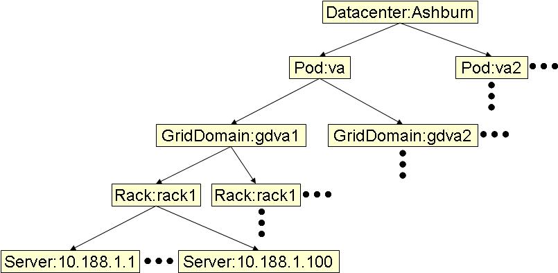
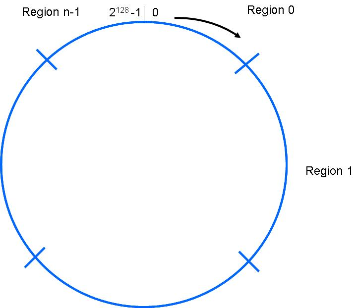
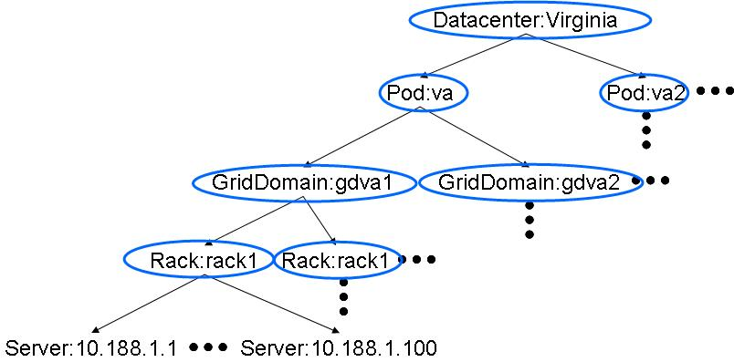
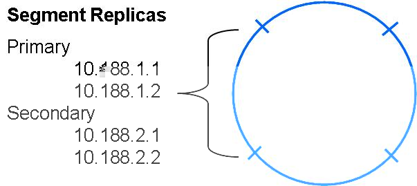

This section describes the major concepts employed by SilverKing and the corresponding meta data constructs that support these concepts.
SilverKing stores all metadata in ZooKeeper. Each metadata construct is identified by a name and version. The version is automatically selected by ZooKeeper using its auto-versioning feature.
A namespace defines a logical namespace into which key, value pairs are stored. Each namespace is associated with a storage policy and - in turn - a particular node instance within a topology (the ring owner) as discussed below.
Namespaces may be created in one of two ways: explicitly or automatically. Explicit namespace creation occurs when the createNamespace() function is called by a SilverKing client. This method allows NamespaceOptions (discussed below) specific to this namespace to be specified. Automatic namespace creation occurs when a namespace that has not been explicitly created is first written to. In this case, the default NamespaceOptions for the given DHT will be used.
A topology defines a logical hierarchical relationship between entities such as servers, racks, datacenters, etc. A topology is typically constructed to reflect underlying physical constraints such as network latency, failure correlation, etc. A sketch of a typical topology is shown in Figure 1.
|  |
Exclusions define a list of servers that should not be included in any ring. Adding a server to the exclusion list precludes data from being stored on the server. This is typically done when the server is not functioning correctly or needs to be taken out of active use for some reason.
A ring is a logical structure with which key-value pairs are associated. This structure is realized using a range of the integers; each key to be stored in the ring is mapped to one of these integers as depicted in Figure 2.
|  |
SilverKing rings are associated with nodes in a topology, and each non-leaf element in a topology may have a ring associated with it as shown below. This node in the topology is referred to as the ring's "owner" as shown in Figure 3 and Figure 4.
|  |
|
The topological children of the owner are "members" of the ring. Each ring is divided into segments that are "owned" by ring members. The segment owners are responsible for storing all data in the segment.
For instance, a rack may have a ring associated with it where the servers in the rack are the ring members. As all data is physically on stored servers, all rings with higher-level nodes in the topology must be composed with lower-level rings until a ring with only servers as members is obtained. This composed ring is actually used to store data.
A ring is specified as a topology, an owner (node instance) for the ring within the topology, an exclusion list, and two additional constructs: weights and storage policy.
A weight is a positive real number associated with each member of a ring. The total size of the segments owned by each member - and hence the members' share of the overall data - is proportional to their weights. Unless otherwise specified, the default weight is 1.0.
A storage policy defines how data is stored within a ring. Currently, each value is stored in one or more members of the ring using replication. A storage policy specifies how each data item must be "stored" at each level of the ring (physical storage only takes place on servers.) Specifically, a storage policy specifies how many primary replicas and how many secondary replicas are used at the given level of the ring. "Primary" replicas must store the data item. "Secondary" replicas will attempt to store data items, but are not required to. In addition, storage policies allow the "binding" of specific members of the ring.
The following storage policy applies for data stored to a pod. It specifies that each data item must contain a primary replica in 1 rack and should contain a secondary replica in another rack. Within each rack, only a single replica is used.
Pod:PodTestPolicyUnbound {
primary {
1 of Rack:RackTestPolicy
}
secondary {
1 of Rack:RackTestPolicy
}
}
Rack:RackTestPolicy {
primary {
1 of Server
}
}
|
Like the previous example, the following policy applies to data stored in a pod. This policy, however, requires 2 primary replicas to be stored - one in rack R1 and one in rack R2. In addition, a secondary replica should be stored in another rack. Within each rack, 1 replica is required and another is desired.
Pod:PodPolicyBound {
primary {
1 of Rack:RackTestPolicy:{R1},
1 of Rack:RackTestPolicy:{R2}
}
secondary {
1 of Rack:RackTestPolicy
}
}
Rack:RackTestPolicy {
primary {
1 of Server
}
secondary {
1 of Server
}
}
|
As storage takes place only on servers, a storage policy is "resolved" to a server-level map of the ring. After final resolution down to a server-level ring map, each ring segment is associated with a list of primary and secondary replicas as shown in Figure 5. Using this map, it is possible to know exactly what primary and secondary servers should store any given key.
|  |
A "passive node" is a server that communicates with clients but does not actively store any data. Lists of passive nodes are named and versioned so that they may easily be included in a DHT.
The previously discussed elements comprise all that is necessary to define a SilverKing DHT instance. Concretely, a DHT instance is specified as a ring name, a ZooKeeper ensemble specification, and a passive node list name.
NamespaceOptions specify properties of created namespaces such as the StorageType and ConsistencyProtocol to be used by a namespace. Explicitly namespace creation allows users to specify options directly. Automatic creation will use the default NamespaceOptions of a DHT.
Each DHT may specify whether it supports only explicit namespace creation, only automatic namespace creation, or both. If both are supported, then a regular expression is specified. This expression is then used to determine when to automatically create a namespace for a put() operation that specifies a non-existent namespace.
Each ring instance is associated with exactly one storage policy. Each storage policy may be associated with multiple ring instances.
Currently, each DHT is only associated with a single ring, and - therefore - each DHT is also currently associated with only a single storage policy. Thus, all namespaces within a DHT are associated with the same storage policy; this may change in the future.
As mentioned earlier, all data is versioned and never overwritten - we simply add a new version when we desired to make a change. For metadata that is derived from other base metadata (e.g. a ring), as base metadata changes, dependendent metadata is updated accordingly. For instance, as a topology or exclusion list changes, the ring mapping will be updated.